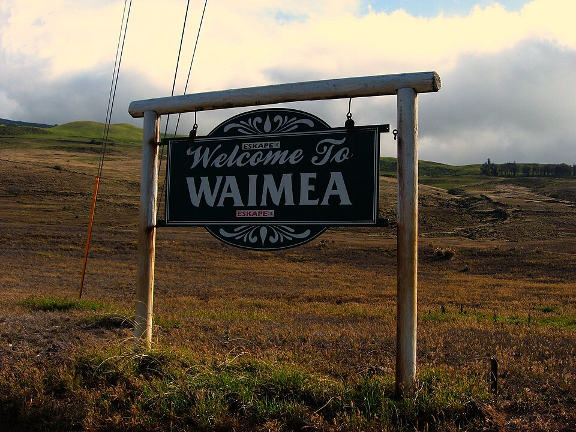
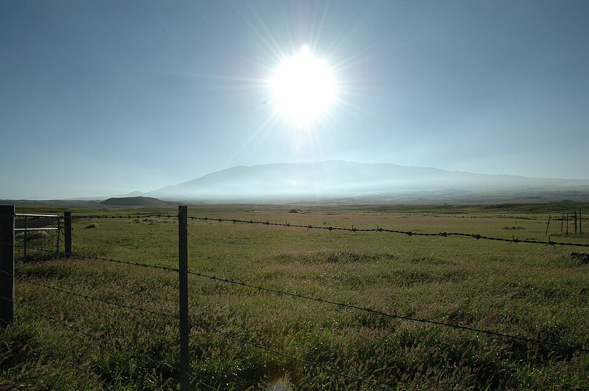
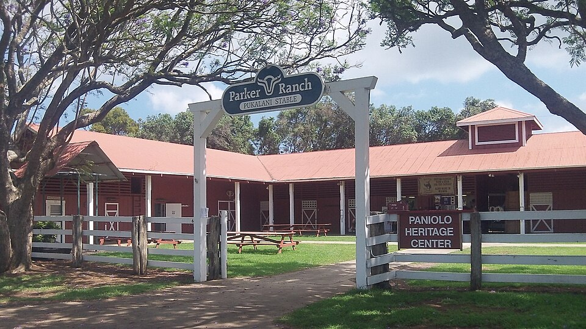

Waimea / Kamuela

Waimea has one of the most recognizable identity puzzles in Hawaiʻi. The town is historically and locally known as Waimea, but many mailing addresses use Kamuela. Both names appear in modern life yet they come from very different places. Waimea is the old Hawaiian name of the land. Kamuela is a later postal solution created because Hawaiʻi already had other communities called Waimea.
The result is a town with two names one tied to identity and the past and the other to the name of an influential resident. Road signs, schools, businesses, and community institutions overwhelmingly use Waimea. Kamuela survives mainly in postal addresses and other formal systems that inherited the federal designation. To understand the difference is to understand the larger history of the town: a Hawaiian upland that has had to evolve by external impacts such as war, cattle, ranching, mass-scale agriculture, American bureaucracy, science, and modern development.
“Reddish Water”
Waimea is formed from wai, meaning fresh water, and mea, meaning reddish, brownish, or reddish-brown. The name is translated as “reddish water.”
The uplands around Waimea are covered in iron-rich volcanic soils formed by the long weathering and oxidation of basalt. In heavy rain, red clay washes from the slopes into streams and drainage channels. Water that may normally run clear becomes brown or rusty red. The name records that visible relationship between rain, soil, and water.
Waimea referred to a broader Hawaiian landscape and ahupuaʻa, linking the uplands to lower lands and the coast. Its waters, forests, grasslands, agricultural fields, and trails supported communities before the ranches, highways, or postal districts arrived.
The Kīpuʻupuʻu Rains
Waimea is famous for the Kīpuʻupuʻu, a cold, driving rain and wind that can rattle those not faimliar with it. The weather can be sharp enough to sting exposed skin, and it helped define the town’s reputation as a place of difficult, strengthening conditions.
Warriors trained in this punishing climate to harden their resolve. Kamehameha I’s Kīpuʻupuʻu warriors carried the name of the rain itself, suggesting not only where they trained but the qualities expected of them: endurance, discipline, and the ability to move through cold wind and mist.
The ancient Waimea landscape also supported extensive dryland agriculture. Farmers used ridges, walls, and windbreaks to protect crops from the strong upland weather. ʻUala (sweet potatoes), uhi (yams), and dryland varieties of kalo could be grown well in the rich soils of Waimea. Trails connected the uplands to coastal communities near Kawaihae and Puakō, allowing mountain crops and forest products to be exchanged for fish, salt, and other coastal resources.

War Across the Waimea Plains
Waimea’s open plains and strategic position made the district politically important.
One famous tradition centers on Hōkūʻula, the red cinder cone overlooking the town. During an invasion by the Maui chief Kamalālāwalu, Waimea’s cold mist and mountain weather became part of the the battle. The invading force was defeated, and later accounts tied the bloodshed, the red volcanic soil, and Waimea’s reddish waters into a single landscape of memory with blood running down the hills into the water.
Waimea was also drawn into the struggle between Kamehameha I and his rival Keōua Kūʻahuʻula in 1790. Their forces fought across the uplands in battles that mixed traditional Hawaiian weapons with Western firearms and artillery. Neither side secured a victory amongst the collective carnage, but the fighting formed part of the larger campaign that eventually left Kamehameha dominant on Hawaiʻi Island.
Cattle Change the Land
A new era began after Captain George Vancouver brought cattle to Hawaiʻi as a gift for Kamehameha I in the 1790s. The king protected the animals under kapu, allowing them to reproduce rapidly. The wild cattle spread into the open uplands of Waimea and the slopes of Mauna Kea devastating the land and endangering the people.
The same grasslands that had supported Hawaiian agriculture and military activity increasingly became cattle country.
John Palmer Parker arrived on Hawaiʻi Island in the early nineteenth century and became closely associated with the effort to hunt and control wild cattle. He established himself in the Waimea uplands, married Rachel Kipikane, a woman of chiefly ancestry, and built the landholdings that became Parker Ranch utilizing his allies and his wife's lineage. What began on a small parcel at Mana expanded over generations into probably the most influential ranching operation in Hawaiʻi.
The Rise of the Paniolo
By the 1830s, the cattle problem required more than hunters. Kamehameha III brought experienced Mexican and Spanish-speaking vaqueros from California to teach Hawaiians how to ride, rope, and manage livestock. Hawaiian riders quickly adapted those skills and created a ranching culture of their own.
The word paniolo was how Hawaiians said Español, preserving the connection to the Spanish-speaking horsemen who helped introduce formal ranching techniques.
Fresh lei and colorful hatbands became part of the paniolo image. Slack-key guitar, or kī hōʻalu, also became closely associated with ranch life and gatherings in the uplands. Waimea became the center of a distinctly Hawaiian cowboy world that grew before the classic American “Wild West” had taken shape.
That skill gained national attention in 1908, when Waimea paniolo Ikua Purdy, Archie Kaʻauʻa, and Jack Low competed at Cheyenne Frontier Days in Wyoming. Purdy won the steer roping championship, Kaʻauʻa placed third, and Low placed sixth. Their success shattered mainland assumptions about Hawaiian cowboys and made Waimea’s ranching tradition famous far beyond the islands.

Why Kamuela Appears on the Mail
Waimea is not a unique place name in Hawaiʻi. Other well-known Waimea communities exist on Kauaʻi and Oʻahu. As the postal system became more formalized, having multiple post offices with the same name created a practical problem.
In the early twentieth century, the Hawaiʻi Island post office for the region chose the name Kamuela. Kamuela is the Hawaiian form of Samuel and honored Samuel Parker, a prominent descendant of the Parker Ranch family and an important political figure during the final years of the Hawaiian Kingdom and the early Territorial period.
The new postal name never displaced Waimea. It functioned as an administrative label.
Farms Beyond the Ranch
Ranching became Waimea’s most famous industry, but it was never the only one. The cool upland climate attracted repeated, unique, agricultural experiments. Mulberry trees and silkworms were introduced during an unsuccessful attempt to create a silk industry. Sugar was tested in the uplands but struggled in the high elevation and strong winds.
Vegetable farming proved more durable. Chinese farmers and, later, Japanese immigrant farmers cultivated cabbage, onions, potatoes, lettuce, and other temperate crops. Waimea became an important source of food for plantation communities elsewhere on Hawaiʻi Island, particularly where coastal sugar lands were devoted almost entirely to cane.
The image of Waimea as ranch country therefore exists beside another history: truck farmers, family plots, market gardens, and produce carried down the mountain to feed towns and plantation camps mostly along the coast.
World War II and Rapid Change
World War II transformed Waimea with remarkable speed. The United States military leased vast areas of Parker Ranch land and brought tens of thousands of Marines into a community whose civilian population was only a tiny fraction of that size (some sources claim 100 Marines per every 1 Waimea resident).
Training grounds, roads, air facilities, electrical systems, and medical services were expanded to support the military presence. The airfield later became Waimea-Kohala Airport, while wartime facilities influenced the town’s postwar development.
The military also left a dangerous legacy. Live-fire training scattered unexploded ordnance across parts of the uplands, creating hazards that continued long after the troops departed. Heavy use of the plains also damaged older agricultural features and reshaped portions of the historic landscape.
From Ranch Town to Scientific and Cultural Center
After the war, Waimea gradually became more than a ranch company town. Parker Ranch heir Richard Smart opened land for residential and commercial development and supported institutions that generally enhanced the community. Hawaiʻi Preparatory Academy grew into a major boarding school. Parker School, Kahilu Theatre, modern medical care, and new commercial centers gave the town an unusually broad cultural and educational life for a rural community not seen anywhere else on island.
Astronomy added another layer. As observatories were built on Mauna Kea, organizations including the Canada-France-Hawaii Telescope and W. M. Keck Observatory established headquarters in Waimea. Scientists, engineers, software specialists, and international families joined paniolo, farmers, teachers, and ranch workers in the town.
This scientific presence also placed Waimea near the center of modern debates over Mauna Kea. For some residents, astronomy represents research, employment, and education. For others, continued telescope development raises questions of cultural authority, environmental protection, sacred geography, and the long history of Native Hawaiian dispossession. These tensions are not separate from Waimea’s past. They are another chapter in the ongoing struggle over who controls land and its use.
The Green Side and the Dry Side
Waimea’s geography remains visible in the weather. The eastern side of town is often cooler, wetter, and greener, with mist drifting across pasturelands beneath the Kohala Mountains. The western side can be sunnier, drier, and more open, transitioning toward the arid Kohala Coast.
Locals commonly describe these areas as the “Green Side” and the “Dry Side.” The change can happen over only a short drive. It gives the town a split personality that mirrors its broader history: Hawaiian and American, ranching and scientific, rural and affluent, old and rapidly changing.
Waimea Today
Modern Waimea is one of the most distinctive communities in Hawaiʻi. Working cattle operations remain visible. Farmers sell local produce. Astronomers and engineers work in facilities tied to telescopes on Mauna Kea. Private schools, a major theater, medical institutions, farmers markets, and restaurants have given the town an influence far beyond its size.
That success has also brought pressure. Rising land values and housing costs have made it harder for families, ranch workers, and agricultural households to remain in the community.
Yet Waimea has not lost its identity. Paniolo culture remains a living tradition and coexists with agriculture, science, development, and even tourism. The Kīpuʻupuʻu still sweeps across the uplands, and heavy rain still turns the soil and water red.